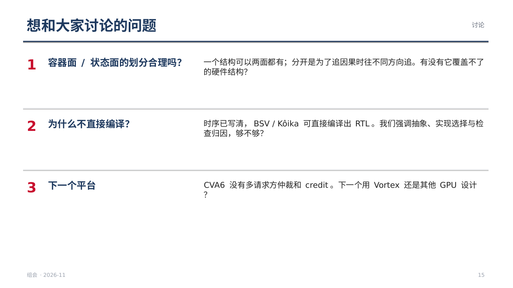

组会 2026-11：带因果的结构 IR（15 页，含讲稿备注）
第 1 页
今天只讲一件事：我们在 RTL 的结构描述里加入因果关系，把内部结构拆成容器面和状态面，用它来让 AI 生成更复杂的 RTL，并且在出错时能追到错从哪里来。
第 2 页
措辞要准：不是说模拟器没有部件和指令的概念——gem5 的功能单元按指令类型配置，GPGPU-Sim 有流水线寄存器和 scoreboard。我们说的是：指令与部件之间的因果关系隐含在代码执行顺序里。右边三条是我们在 CVA6 模型上逐条核对的结果；对 gem5、GPGPU-Sim 是同类的经验判断，未逐条验证。
第 3 页
情况 A、B 分别来自实验 2 的测试程序 g2-load-branch、g2-branch-store，参数 i2c2-sb8-fw1-rn1。单向的挡住关系不是写在一个地方的规则，而是“发射时标哪些位”和“发射前查哪一位”两段代码合起来产生的。我第一次整理 IR 时就漏了，是只用 IR 的预测器算错了 38 个情况才暴露出来。
第 4 页
Representation Bottleneck（Fu 等，arXiv 2604.17097，2026-04）的“IR”指硬件描述语言（Verilog / VHDL / Chisel / Bluespec / PyMTL3 / HLS C），任务是 VerilogEval、RTLLM 的单模块题。原文对 HLS C 的分析：AI 写的 C 有 98.7% 能被 Bambu 转成 Verilog，失败主要来自 HLS 生成电路的接口（启动 / 完成握手、存储器总线）与期望的逐拍行为不匹配；“越易用越差”作者主要归因于训练数据。“微架构被包装、AI 看不到每拍行为”是我们对这组数据的解读，被问到时要说明。也提醒：这组数字只来自 Representation Bottleneck，与 HINT 无关（旧笔记 survey/08-conclusions 把两者写在一起）。HINT 是 Qiang Xu 组的工作；FML 是合作者的框架。这一页的逻辑：表示层比模型更重要；我们的表示层在 HINT 的基础上加了周期级的因果与容器面 / 状态面。
第 5 页
ArchXBench（arXiv 2508.06047）：第 2 级已有简单流水线，部分模型能做对；断崖在第 4 级（FFT、滤波器、流水线浮点）。摘要说第 4 级起全部失败，表中流水线浮点单元有个别模型通过，所以写“基本”。注意它的题都是数据通路加速器，不含指令。CVDP（arXiv 2506.14074）：agent 类题更难，尤其是复用已有 RTL 与验证；写激励 / 检查器 / 断言最弱（RTL-BenchMT 的分析）。这一页对应“目的”：让 AI 在复杂处理器上也能生成 RTL。
第 6 页
左边：survey/27-xdomain-A、survey/25-gen-C；HWE-Bench（arXiv 2604.14709，北大梁云组）417 个真实修复任务，小项目（含 CVA6、Ibex）> 90%；三类失败只有定性描述，没有比例。右边：route B 的整合错误（~/fml-routeb STATUS 阶段 2）。第 3 页的 CVA6 例子也说明同一点：分支挡住存储、加载挡不住分支，只看测试是推不出来的。
第 7 页
这是思路总结 §1.10 的内容。分开“占位置”和“存信息”，是因为追因果时要往不同的方向追：被占位置挡住，要找占着的人；因为信息没准备好，要找写它的人。
第 8 页
CVA6 模型的 IR 里有 19 条因果边，其中 13 条只由调用顺序或端口先后决定。
第 9 页
路线的演变：v3（11-03）是“现成模拟器 → 按流水级切分 → AI 写 RTL”，route B 在 GPGPU-Sim 上就是这样做的。但现成模拟器怎么写由别人决定，复杂系统里指令与结构的因果藏在代码顺序里（CVA6 模型 19 条边中 13 条如此）。所以对复杂系统，我们提出一种确切的模拟器范式：用因果 IR 加 FML 来写模拟器，它既能跑、又能直接作为 AI 生成 RTL 的规格。三类路径的划分来自 11-03 的建模 spec；写法规则来自“可生成 RTL 的 FML 模型规范”初稿（18 条）。与先例的区别：PyMTL3 / Cascade 由人把周期模型细化成 RTL；Kôika / BSV 直接编译、不用 AI，也不做检查与归因。
第 10 页
用途二的落脚点不是“给人看的报告”，而是给 AI 的反馈：每次比对失败，都告诉 AI 哪个结构、哪一面、哪条边、哪一拍、被谁挡住。前三类 AI 自己修；后三类停下报告——规格错时让 AI 先试着修，它多半能凑出一个“通过”（ImpossibleBench：给“停下”出口后作弊从 54% 降到 9%）。衡量方法对应论文一 RQ1：四种反馈（只给测试结果 / 第一处分歧 / 按模块归因 / 因果归因）下，修正成功率、迭代次数、假修复率。理论归属：基于模型的一致性诊断（Reiter 1987）。
第 11 页
细节见 survey/25-gen-summary、survey/27-xdomain-summary。审稿人一定会问：既然时序都写清了，为什么不直接编译？我们的回答：模型有大量抽象，同一时序有多种实现，重点在检查与归因——待实验支撑。
第 12 页
测试程序直接生成：单条指令、两两组合、压满资源，在 32 组参数下运行。预测器不调用模型，只按 IR 推算。
第 13 页
每次修正都有证据、记录在案，旧条目不删、标为已被替代。
第 14 页
两条线共用同一份因果 IR：既是 AI 生成的规格，也是验证追溯的地图，所以无论哪种结果，IR 和验证这部分都不白做。论文二（IR 不完整时怎么办）、论文三（性能瓶颈）在此基础上展开。
第 15 页
第一个问题最想听意见。